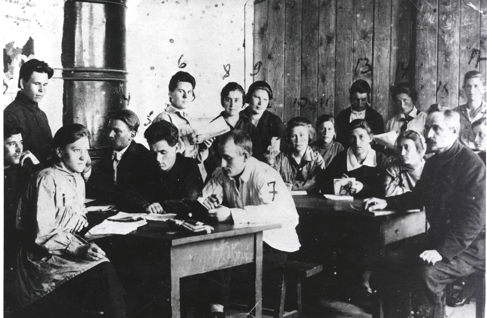
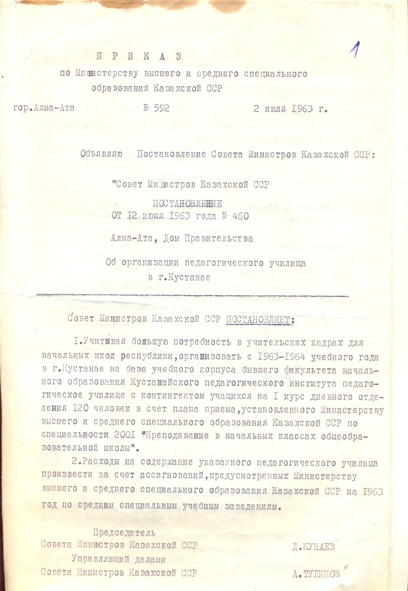

Хронология КВПК

Студенты педагогического техникума 1925 года
1943
Костанай педагогикалық училищесі Боровое ауылына көшірілді.
1963

Қостанай қаласында педагогикалық училищені ұйымдастыру туралы Қазақ КСР Министрлер Кеңесінің 1963 жылғы қаулысы.
1967
Алғашқы бастауыш сынып мұғалімдері оқуын аяқтады.
1981
Колледж жаңа оқу корпусына көшті.
1992
Педагогикалық училище колледж болып қайта құрылды.
2002
Информатика және есептеу техникасы мамандығы ашылды.
2017
QPK LIFE студенттік телевидениесі іске қосылды.
2023
Колледждің жаңа жетістіктері мен жобалары.